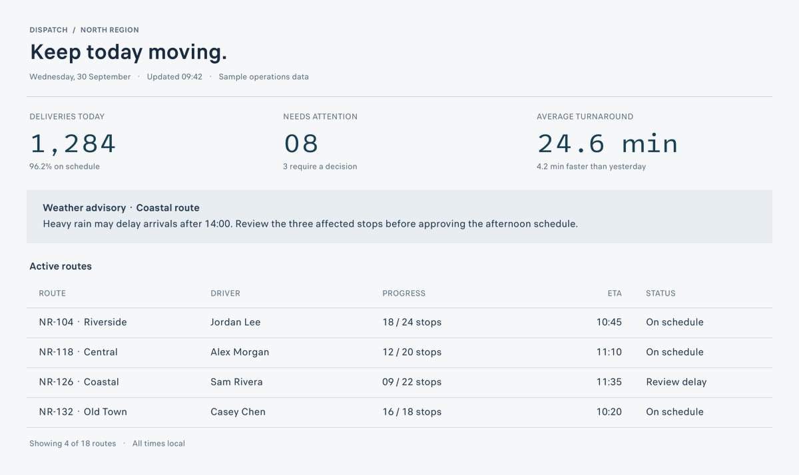
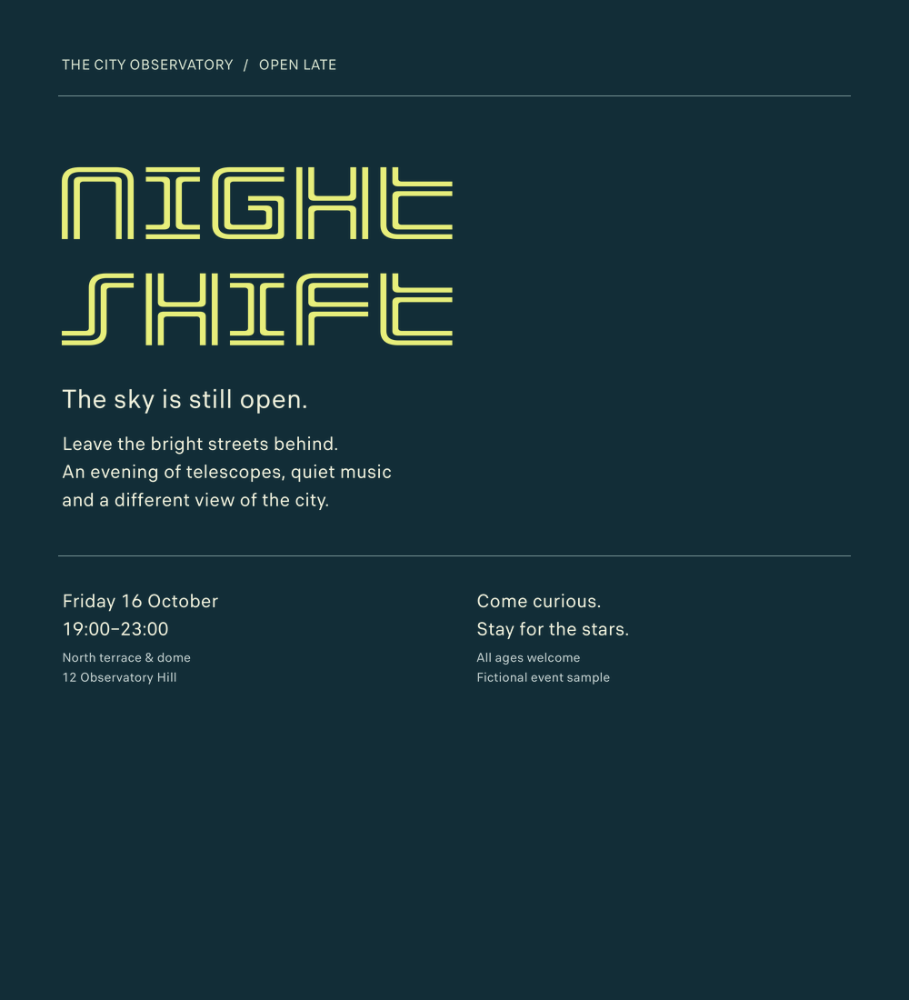
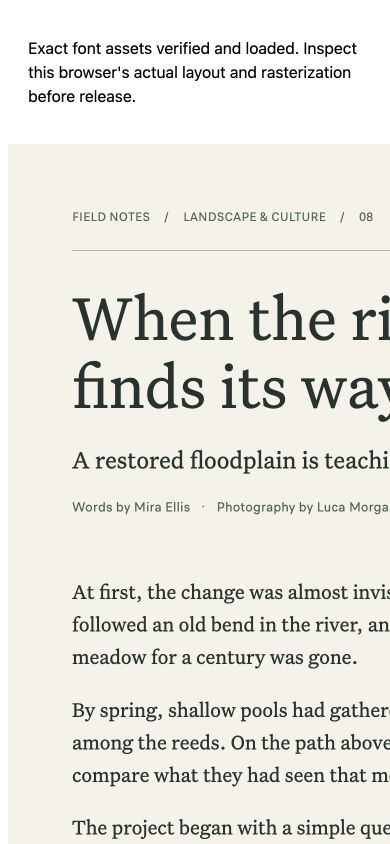
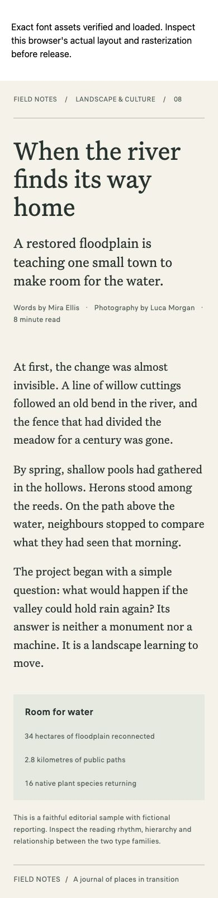

Three contexts, inspectable settings
Editable source specificationsThese fixed examples exercise reading hierarchy, a dense interface, and expressive display type. They are starting layouts, not universal font recommendations or held-out evaluation results.
The images below are deterministic, unhinted HarfBuzz/FreeType renders. The browser links show separately captured application recipes with exact assets verified and loaded.

01 / Editorial reading
Field Notes — the river returns. Six roles, headline and body hierarchy, supporting sidebar.



02 / Dense interface
Dispatch — operations at a glance. Six roles, numeric metrics, small labels, and a real data table.



03 / Poster and brand
Night Shift — an observatory evening. Five roles, expressive title, quieter details, and strong scale contrast.


Browser verification found a real defect
Verification notes & receiptThe first editorial recipe kept its fixed canvas on a 390px viewport, creating a 1088px page. The final recipe fits the viewport, stacks columns below 640px, reduces outer padding, and scales large headings.
- All six final views have document width equal to viewport width.
- Each role passed the asset SHA-256 gate and loaded its expected scoped face alias.
- The mobile interface table scrolls inside its own focusable region. A keyboard Right input moved it from 0px to 40px.
- Exact identities, axes, and features stay fixed; responsive size rules are recorded in each implementation recipe.
Observed in Chrome on macOS at 1280 × 900 and an emulated 390 × 844 viewport. These are actual browser captures; they do not establish raster equivalence with the PNG renderer, physical-device behavior, or native Windows support.
Machine-readable browser evidenceGenerated CSSExact-asset loading gate



Broader collection, measured retrieval coverage
Frozen coverage snapshotCollection expansion
All 27,454 original mixed-source faces remain available. Pinned Google Fonts selections and Arrow Type add 66 distinct faces, including coherent style sets and less-served scripts.
| Measure | Before | After |
|---|---|---|
| Faces | 27,454 | 27,520 |
| Family/version/width groups | 8,674 | 8,710 |
| Embedded family names | 8,012 | 8,041 |
| Variable faces | 344 | 378 |
Fourteen short text probes shaped in exact new faces with zero missing glyphs. Sample coverage is not complete language support. Rights remain separately labeled: 19,732 unknown, 7,422 embedded-open-license notices, and 366 restricted notices.
Actual rendered-content indexing
The default FontCLIP index covers 26,313 of 27,520 faces (95.61%), including 19,989 with unknown category metadata. The remaining 1,207 have recorded sample or rendering failures; exact-text metadata discovery remains available.
Embeddings describe recorded text samples at default axes. Separate script indexes use their own text and language. Counts below measure configured-sample eligibility and successful indexing, not language completeness, readability, or design quality.
Inspect all 13 script-index counts
| Sample | Eligible | Indexed |
|---|---|---|
| Arabic | 40 | 40 |
| Bengali | 6 | 6 |
| Chinese | 4 | 4 |
| Chinese Traditional | 49 | 49 |
| Cyrillic | 8,317 | 8,305 |
| Devanagari | 62 | 62 |
| Ethiopic | 1 | 1 |
| Greek | 5,438 | 5,427 |
| Hebrew | 85 | 85 |
| Japanese | 49 | 49 |
| Korean | 4 | 4 |
| Tamil | 0 | 0 |
| Thai | 36 | 36 |
Tamil has no eligible face for the configured sample. Color/bitmap rendering remains unsupported. Search does not substitute Latin letterforms when a required script index is missing.
Observed retrieval failures and targeted fixes
Query smoke observationsThe non-blinded smoke review found that the elegant high-contrast serif query returned chunky, decorative or distressed faces. The angular query found some angular shapes, but included a fragmented first result and a face named CondItalic despite the requested upright flag.
The humanist query's first two serif options are visually calm and related, but the shortlist has limited shape diversity. It also admitted an explicitly named Extrabold face for a weight-400 request. These preserved shortlists expose retrieval and style-constraint failures; usable initial directions do not make every result a recommended selection.
Elegant query: observed failureAngular query: observed failureHumanist query: limited diversity and style conflict


Supervised reference recovery
Explicitly selected Rajdhani and Bodoni image references recovered useful alternatives after the semantic misses. This supplies a preferred visual direction; it is not zero-shot success. Prompt rewrites, extra negatives, and eight-view augmentation did not establish a reliable semantic fix in the exploratory study.
Recovery method and limitationsSelected Rajdhani reference: comparisonSelected Bodoni reference: comparison


What the checks establish
- Regression suite
- 270 passed with optional visual dependencies; 260 passed and 10 optional tests skipped in the separate core-only environment. Synthetic fixtures on macOS, not an aesthetic evaluation. Full output · Core-only output
- Model adapter parity
- CPU float32 text, image, and projection parity against the pinned official FontCLIP implementation passed. Twelve sampled canonical-equivalent pairs also produced equal render masks. This checks the adapter and sampled reuse, not recommendation quality.
- Exact source resolution
- 27,520 faces resolved to one hash-verified source copy each; zero failures. This checks identity and available bytes, not every glyph.
- Discovery comparisons
- Four before/after deterministic queries with 48 candidate records, interpretations, reasons, and pagination. Catalog changes and comparison limits remain attached to the evidence.
Held-out first pass: no improvement over basic collection access
The harness produced final images byte-identical to basic collection access in all three cases. The selecting agent preferred the basic/harness poster to the unaided version; the other two contexts tied across all conditions.
A = unaided selection; B = basic access to the same collection; C = the harness. One fresh agent completed all A stages, then B, then C, under equal caps with the same exact renderer. These are authored fixtures and same-agent self-assessments, with carryover between conditions.
| Context and brief | Final typography | First-pass result and images |
|---|---|---|
| English/French ferry notice | Source Sans Pro | A = B = C. Identical final image |
| Polish community print poster | Cooper-Black-Stencil title + Roboto support | B = C; preferred to A by the selecting agent. A final · B/C final |
| Turkish mobile sewing lesson | Source Sans Pro | A = B = C. Identical final image |


All nine final compositions passed exact-byte/no-fallback and measured no-clipping/no-line-overlap checks. These finals were not verified in a production browser or physical print test. A fresh blinded AI judge confirmed B=C > A for the poster and tied all notice/mobile variants, including their original baselines. This was formative review, not human user testing.
Full held-out reportResults, timings, counts, and image hashesProtocol and limits
Post-feedback design refinement
The revised notice gives English and French assistance equal emphasis. A Turkish specimen now exposes the required adjacent-glyph distinctions at 18px. The supplemental judge accepted the notice correction and retained a minor l/I readability concern. These are labeled iterations, not fresh held-out outcomes.